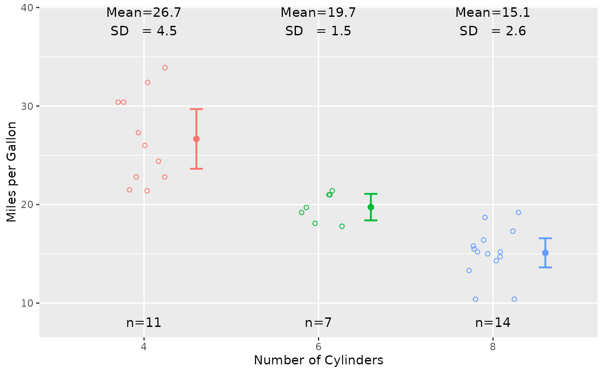

geom_stripchart.Rdgeom_stripchart is an adaptation of the EnvStats function
stripChart and is used to create a strip plot
using functions from the package ggplot2.
geom_stripchart produces one-dimensional scatter plots (also called dot plots),
along with text indicating sample size and estimates of location (mean or median) and scale
(standard deviation or interquartile range), as well as confidence intervals
for the population location parameter, and results of a hypothesis
test comparing group locations.
geom_stripchart(..., seed = 47, paired = FALSE, paired.lines = paired,
group = NULL, x.nudge = if (paired && paired.lines) c(-0.3, 0.3) else 0.3,
text.box = FALSE, location = "mean", ci = "normal", digits = 1,
digit.type = "round", nsmall = ifelse(digit.type == "round", digits, 0),
jitter.params = list(), point.params = list(), line.params = list(),
location.params = list(), errorbar.params = list(),
n.text = TRUE, n.text.box = text.box, n.text.params = list(),
location.scale.text = TRUE, location.scale.text.box = text.box,
location.scale.text.params = list(), test.text = FALSE,
test.text.box = text.box,
test = ifelse(location == "mean", "parametric", "nonparametric"),
test.text.params = list())Arguments that can be passed on layer, as well as to the
geoms and stats used to create the strip chart, including
geom_jitter, geom_point,
geom_line, stat_summary,
geom_errorbar, stat_n_text,
stat_mean_sd_text, stat_median_iqr_text, and stat_test_text.
For the case of non-paired data, the argument seed is passed to
the R function set.seed. Because jittering depends on the
R random number generator, using the same value of seed each time
the same data are plotted with geom_stripchart ensures that the resulting
plot is the same. The default value is set.seed=47.
For the case of two groups, a logical scalar indicating whether the data
should be considered to be paired. The default value is paired=FALSE.
When paired=TRUE, you must also supply the argument group (see below)
to indicate which variable to use to identify the pairing (e.g., a variable that
indicates which observations were taken before treatment and which observations
were taken after treatment).
NOTE: if the argument test.text.params is supplied and it includes a
component named paired, the value of that component
is overriden by the value of the argument paired.
For the case when there are two groups and the observations are paired
(i.e., paired=TRUE),
a logical scalar indicating whether to draw lines between the paired observations.
The default value is the value of paired.
For the case when there are two groups and the observations are paired
(i.e., paired=TRUE),
a character string indicating the variable that identifies the pairing
(e.g., a variable that indicates which observations were taken before treatment
and which observations were taken after treatment).
A numeric scalar indicating the amount to move the estimates of location and
confidence interval lines on the \(x\)-axis to the right or left of the actual
\(x\) value. This is used to avoid overlapping with the actual data.
For the case of two groups and paired observations, the default value is
x.nudge=c(-0.3, 0.3), which draws estimates of location and confidence interval lines
to the left by 0.3 for the first group and to the right by 0.3 for the second group.
Otherwise, the default value is x.nudge=0.3.
A logical scalar indicating whether to surround text indicating sample size,
location/scale estimates, and test results with text boxes (i.e.,
whether to use link[ggplot2]{geom_label} instead of
geom_text). This is a convenience argument and is simply
a way to simultaneously set the values of n.text.box,
location.scale.text.box, and test.text.box. You can override this
argument for sample size, location/scale, and/or test results by supplying the
arguments n.text.box, location.scale.text.box, and
test.text.box individually (see below).
A character string indicating whether to display the mean for each group
(location="mean", the default) or the median for each group
(location="median").
For the case when location="mean", a character string indicating what kind of
confidence interval to plot for each group. Possible values are ci="normal"
(standard confidence interval based on Student's t-distribution; the default),
or ci="boot" (confidence interval based on the bootstrap).
NOTE: For the case when location="median", quantiles are plotted.
By default, the 25'th and 75'th percentiles are plotted, but this can be changed via
including a component called conf.int in the argument error.bar.params.
See the help file for smedian.hilow for details.
Integer indicating the number of digits to use for displaying text indicating the
location and scale estimates and, for the case of one or two groups,
the number of digits to use for displaying text indicating the confidence interval
associated with the test of hypothesis. When digit.type="round" (see below)
the argument digits indicates the number of digits to round to, and when
digit.type="signif" the argument digits indicates the number of
significant digits to display. The default value is digits=1.
For location/scale estimates, you can override the value of this argument by
including a component named digits in the argument location.scale.text.params,
and for confidence interval limits, you can override the value of this argument by
including a component named location.digits in the argument test.text.params.
Character string indicating whether the digits argument (see above) refers to significant
digits (digit.type="signif"), or how many decimal places to round to
(digit.type="round", the default).
For location/scale estimates, you can override the value of this argument by
including a component named digit.type in the argument location.scale.text.params,
and for confidence interval limits, you can override the value of this argument by
including a component named location.digit.type in the argument test.text.params.
Integer passed to the function format indicating the the minimum number of
digits to the right of the decimal point for the computed estimates of location and scale
and the confidence interval associated with the test of hypothesis.
The default value is nsmall=digits when digit.type="round" and
nsmall=0 when digit.type="signif". When nsmall is greater than 0,
all computed estimates of location and scale and all confidence interval limits
will have the same number of digits to the right of the decimal point
(including, possibly, trailing zeros). To omit trailing zeros, set nsmall=0.
A list containing arguments to the function geom_jitter that will be
used to plot the points. The default value is an empty list: jitter.params=list(),
in which case the default values for geom_jitter are used, except for
the following modifications: pch=1, width=0.15, height=0.
This argument is ignored when there are two groups and both paired=TRUE and
paired.lines=TRUE (see the explanation for point.params and line.params
below).
For the case when there are two groups and both paired=TRUE and
paired.lines=TRUE, this is a list containing arguments to the function
geom_point that will be used to plot the points.
The default value is an empty list: point.params=list(),
in which case the default values for geom_point are used, except for
the following modification: pch=1.
For the case when there are two groups and both paired=TRUE and
paired.lines=TRUE, this is a list containing arguments to the function
geom_line that will be used to draw lines between the paired
observations.
The default value is an empty list: line.params=list(),
in which case the default values for geom_line are used, except for
the following modification: color="gray".
A list containing arguments to the function stat_summary
that will be used to plot the estimates of location, i.e.,
stat_summary is called with fun.y=location and
geom="point" where location is the location
argument to geom_stripchart described above.
The default value is an empty list: location.params=list(), in which case the
default values for stat_summary are used, except for
the following modifications: size=2, position=position_nudge(x = x.nudge)),
where x.nudge is the x.nudge argument to geom_stripchart described above.
A list containing arguments to the function stat_summary
that will be used to plot the confidence interval, i.e.,
stat_summary is called with fun.data=fun.data and
geom="errorbar", where fun.data has the value
"mean_cl_normal" or "mean_cl_boot" depending of the value of the argument
ci described above, or, in the case when location="median" fun.data
has the value "median_hilow".
The default value is an empty list: errorbar.params=list(), in which case the
default values for stat_summary are used, except for
the following modifications: fun.args = list(conf.int = ifelse(location == "mean", 0.95, 0.5)), size = 0.75, width = 0.075, position = position_nudge(x = x.nudge)),
where x.nudge is the x.nudge argument to geom_stripchart described above.
A logical scalar indicating whether to display the sample size for each group.
The default is n.text=TRUE.
A logical scalar indicating whether to surround the text indicating the sample size for
each group with a text box (i.e., whether to use geom_label
instead of geom_text).
The default is n.text.box=text.box (see above for the argument text.box).
A list containing arguments to the function stat_n_text that will be
used to display text indicating the sample size for each group.
The default value is an empty list: n.text.params=list(),
in which case the default values for stat_n_text are used.
A logical scalar indicating whether to display text indicating the location and scale
for each group. The default is location.scale.text=TRUE.
A logical scalar indicating whether to surround the text indicating the
location and scale for each group with a text box (i.e., whether to use
geom_label instead of geom_text).
The default is location.scale.text.box=text.box
(see above for the argument text.box).
A list containing arguments to the function
stat_mean_sd_text (when location="mean") or
arguments to the function
stat_median_iqr_text (when location="median")
that will be used to display text indicating the location and scale for each group.
The default value is an empty list: location.scale.text.params=list(),
in which case the default values for stat_mean_sd_text
or stat_mean_sd_text are used.
A logical scalar indicating whether to display the results of the hypthesis test
comparing groups. The default is test.text=FALSE.
A logical scalar indicating whether to surround the text indicating the
results of the hypothesis test comparing groups with a text box
(i.e., whether to use geom_label instead of
geom_text).
The default is test.text.box=text.box
(see above for the argument text.box).
A character string indicating whether to use a standard parametric test
(test="parametric", the default when location="mean") or
nonparametric test (test="nonparametric", the default when location="median")
to compare groups.
A list containing arguments to the function stat_test_text
that will be used to display text indicating the results of the hypothesis
test to compare groups. The default value is an empty list:
test.text.params=list(), in which case the default values for
stat_test_text are used, with the exception that the value of
the argument test in the call to stat_test_text is
determined by the value of the argument test supplied to
geom_stripchart (see above).
See the vignette Extending ggplot2 at https://cran.r-project.org/package=ggplot2/vignettes/extending-ggplot2.html and Chapter 12 of Wickham (2016) for information on how to create a new geom.
Wickham, H. (2016). ggplot2: Elegant Graphics for Data Analysis (Use R!). Second Edition. Springer.
# First, load and attach the ggplot2 package.
#--------------------------------------------
library(ggplot2)
#==========
#---------------------
# 3 Independent Groups
#---------------------
# Example 1:
# Using the built-in data frame mtcars,
# create a stipchart of miles per gallon vs. number of cylinders
# using different colors for each level of the number of cylinders.
#------------------------------------------------------------------
p <- ggplot(mtcars, aes(x = factor(cyl), y = mpg, color = factor(cyl)))
p + geom_stripchart() +
labs(x = "Number of Cylinders", y = "Miles per Gallon")
#> Warning: `fun.y` is deprecated. Use `fun` instead.
#> Warning: Computation failed in `stat_n_text()`:
#> there is no package called ‘dplyr’
#> Warning: Computation failed in `stat_mean_sd_text()`:
#> there is no package called ‘dplyr’

#==========
# Example 2:
# Repeat Example 1, but include the results of the
# standard parametric analysis of variance.
#-------------------------------------------------
dev.new()
p + geom_stripchart(test.text = TRUE) +
labs(x = "Number of Cylinders", y = "Miles per Gallon")
#> Warning: `fun.y` is deprecated. Use `fun` instead.
#> Warning: Computation failed in `stat_n_text()`:
#> there is no package called ‘dplyr’
#> Warning: Computation failed in `stat_mean_sd_text()`:
#> there is no package called ‘dplyr’
if (FALSE) {
#==========
# Example 3:
# Using Example 2, show explicitly the layering
# process that geom_stripchart is using.
#
# This plot should look identical to the previous one.
#-----------------------------------------------------
set.seed(47)
dev.new()
p + theme(legend.position = "none") +
geom_jitter(pch = 1, width = 0.15, height = 0) +
stat_summary(fun.y = "mean", geom = "point",
size = 2, position = position_nudge(x = 0.3)) +
stat_summary(fun.data = "mean_cl_normal", geom = "errorbar",
size = 0.75, width = 0.075, position = position_nudge(x = 0.3)) +
stat_n_text() +
stat_mean_sd_text() +
stat_test_text() +
labs(x = "Number of Cylinders", y = "Miles per Gallon")
#==========
# Example 4:
# Repeat Example 2, but put all text in a text box.
#--------------------------------------------------
dev.new()
p + geom_stripchart(text.box = TRUE, test.text = TRUE) +
labs(x = "Number of Cylinders", y = "Miles per Gallon")
#==========
# Example 5:
# Repeat Example 2, but put just the test results
# in a text box.
#------------------------------------------------
dev.new()
p + geom_stripchart(test.text = TRUE, test.text.box = TRUE) +
labs(x = "Number of Cylinders", y = "Miles per Gallon")
#==========
# Example 6:
# Repeat Example 2, but:
# 1) plot the median and IQR instead of the mean and the 95
# 2) show text for the median and IQR, and
# 3) use the nonparametric test to compare groups.
#
# Note that following what the ggplot2 stat_summary function
# does when you specify a "confidence interval" for the
# median (i.e., when you call stat_summary with the arguments
# geom="errorbar" and fun.data="median_hilow"), the displayed
# error bars show intervals based on estimated quuantiles.
# By default, stat_summary with the arguments
# geom="errorbar" and fun.data="median_hilow" displays
# error bars using the 2.5'th and 97.5'th percentiles.
# The function geom_stripchart, however, by default
# displays error bars using the 25'th and 75'th percentiles
# (see the explanation for the argument ci above).
#------------------------------------------------------------
dev.new()
p + geom_stripchart(location = "median", test.text = TRUE) +
labs(x = "Number of Cylinders", y = "Miles per Gallon")
#==========
# Clean up
#---------
graphics.off()
rm(p)
#========================================
#---------------------
# 2 Independent Groups
#---------------------
# Example 7:
# Repeat Example 2, but use only the groups with
# 4 and 8 cylinders.
#-----------------------------------------------
dev.new()
p <- ggplot(subset(mtcars, cyl %in% c(4, 8)),
aes(x = factor(cyl), y = mpg, color = cyl))
p + geom_stripchart(test.text = TRUE) +
labs(x = "Number of Cylinders", y = "Miles per Gallon")
#==========
# Example 8:
# Repeat Example 7, but
# 1) facet by transmission type
# 2) make the text smaller
# 3) put the text for the test results in a text box
# and make them blue.
dev.new()
p + geom_stripchart(test.text = TRUE, test.text.box = TRUE,
n.text.params = list(size = 3),
location.scale.text.params = list(size = 3),
test.text.params = list(size = 3, color = "blue")) +
facet_wrap(~ am, labeller = label_both) +
labs(x = "Number of Cylinders", y = "Miles per Gallon")
#==========
# Clean up
#---------
graphics.off()
rm(p)
#========================================
#---------------------
# 2 Independent Groups
#---------------------
# Example 9:
# The guidance document USEPA (1994b, pp. 6.22--6.25)
# contains measures of 1,2,3,4-Tetrachlorobenzene (TcCB)
# concentrations (in parts per billion) from soil samples
# at a Reference area and a Cleanup area. These data are strored
# in the data frame EPA.94b.tccb.df.
#
# First create one-dimensional scatterplots to compare the
# TcCB concentrations between the areas and use a nonparametric
# test to test for a difference between areas.
dev.new()
p <- ggplot(EPA.94b.tccb.df, aes(x = Area, y = TcCB, color = Area))
p + geom_stripchart(location = "median", test.text = TRUE) +
labs(y = "TcCB (ppb)")
#==========
# Example 10:
# Now log-transform the TcCB data and use a parametric test
# to compare the areas.
dev.new()
p <- ggplot(EPA.94b.tccb.df, aes(x = Area, y = log10(TcCB), color = Area))
p + geom_stripchart(test.text = TRUE) +
labs(y = "log10[ TcCB (ppb) ]")
#==========
# Example 11:
# Repeat Example 10, but allow the variances to differ
# between Areas.
#-----------------------------------------------------
dev.new()
p + geom_stripchart(test.text = TRUE,
test.text.params = list(test.arg.list = list(var.equal=FALSE))) +
labs(y = "log10[ TcCB (ppb) ]")
#==========
# Clean up
#---------
graphics.off()
rm(p)
#========================================
#--------------------
# Paired Observations
#--------------------
# Example 12:
# The data frame ACE.13.TCE.df contians paired observations of
# trichloroethylene (TCE; mg/L) at 10 groundwater monitoring wells
# before and after remediation.
#
# Create one-dimensional scatterplots to compare TCE concentrations
# before and after remediation and use a paired t-test to
# test for a difference between periods.
ACE.13.TCE.df
# TCE.mg.per.L Well Period
#1 20.900 1 Before
#2 9.170 2 Before
#3 5.960 3 Before
#... ...... .. ......
#18 0.520 8 After
#19 3.060 9 After
#20 1.900 10 After
dev.new()
p <- ggplot(ACE.13.TCE.df, aes(x = Period, y = TCE.mg.per.L, color = Period))
p + geom_stripchart(paired = TRUE, group = "Well", test.text = TRUE) +
labs(y = "TCE (mg/L)")
#==========
# Example 13:
# Repeat Example 11, but use a one-sided alternative since
# remediation should decrease TCE concentration.
#---------------------------------------------------------
dev.new()
p + geom_stripchart(paired = TRUE, group = "Well", test.text = TRUE,
test.text.params = list(test.arg.list = list(alternative="less"))) +
labs(y = "TCE (mg/L)")
#==========
# Clean up
#---------
graphics.off()
rm(p)
#========================================
#----------------------------------------
# Paired Observations, Nonparametric Test
#----------------------------------------
# Example 14:
# The data frame Helsel.Hirsch.02.Mayfly.df contains paired counts
# of mayfly nymphs above and below industrial outfalls in 12 streams.
#
# Create one-dimensional scatterplots to compare the
# counts between locations and use a nonparametric test
# to compare counts above and below the outfalls.
Helsel.Hirsch.02.Mayfly.df
# Mayfly.Count Stream Location
#1 12 1 Above
#2 15 2 Above
#3 11 3 Above
#... ... .. .....
#22 60 10 Below
#23 53 11 Below
#24 124 12 Below
dev.new()
p <- ggplot(Helsel.Hirsch.02.Mayfly.df,
aes(x = Location, y = Mayfly.Count, color = Location))
p + geom_stripchart(location = "median", paired = TRUE,
group = "Stream", test.text = TRUE) +
labs(y = "Number of Mayfly Nymphs")
#==========
# Clean up
#---------
graphics.off()
rm(p)
}